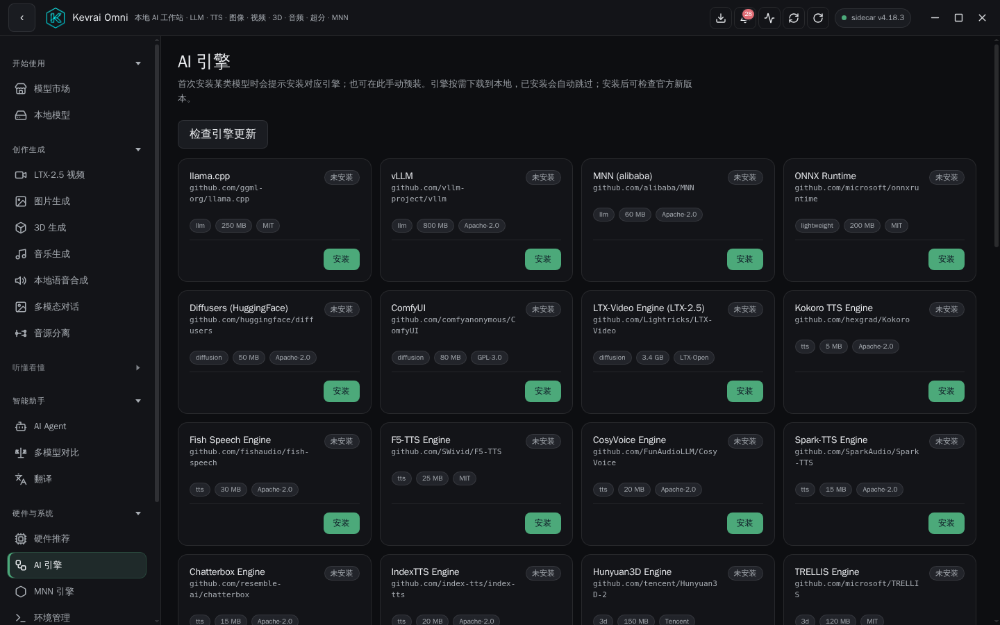

01MODEL MARKET
先找到合适的模型，再开始下载。
统一搜索 HuggingFace 与魔搭 ModelScope。按任务、引擎、量化与热度筛选，每张卡片直接标出体积、推荐引擎和运行内存。
一个安装包，把模型市场、双引擎推理、Agent、语音与创作工具装进同一台电脑。模型在你这里，数据也留在你这里。

以下截图取自 Kevrai Omni 4.18.3 实际运行窗口，保留完整应用边框与侧边栏版本信息。

推理步骤、工具调用与参数集中在同一张折叠卡里。过程可展开，结果可复核。

引擎独立安装，模型单独下载。187 个官方预转换模型，也可把 HF 权重转换为 MNN 格式。

llama.cpp、vLLM、MNN、ONNX Runtime、ComfyUI 等引擎在一个页面里安装、检查更新。
不是把十几个工具拼在一起，而是让它们共享同一套模型、引擎与运行环境。
统一搜索 HuggingFace 与魔搭 ModelScope。按任务、引擎、量化与热度筛选，每张卡片直接标出体积、推荐引擎和运行内存。
llama.cpp 跑 GGUF，MNN 跑量化模型。引擎按需安装，模型独立下载；换引擎不用重装整个应用。
本地 ReAct 助手自动拆解任务、调用工具。每一步推理、参数与结果都留在对话里，危险操作先征求确认。
LTX-2.5 文生视频与图生视频、图片生成、3D 生成、音乐生成，共用同一套本地模型管理。
语音转写、语音合成、音源分离与音色克隆。Piper、Kokoro、Fish Speech、CosyVoice 等引擎可选。
知识库 RAG、向量嵌入、多模态对话与翻译。文档索引和向量都保存在本机。
读取 CPU、内存、显卡、磁盘与网络，按真实配置推荐模型与量化档；环境、插件、日志集中管理。
本地 AI 的门槛不该是命令行、Python 环境和一堆互不相干的仓库。Kevrai Omni 把这些收进一个可维护的桌面应用，同时保留开源与可审计。
推理在本机完成，模型、对话与知识库文件保存在你的磁盘，不经过云端。
应用、引擎、模型三层独立更新。新引擎接入不需要重写界面，旧模型也能继续用。
引擎安装、模型下载、格式转换都有实时状态与失败原因，不把等待藏在后台。
Electron 前端、FastAPI sidecar 与构建脚本公开在 GitHub，问题、PR 与发行记录都可追溯。
官方安装包由 GitHub Releases 分发。首次启动会自动准备本地运行时，不需要预装 Python。